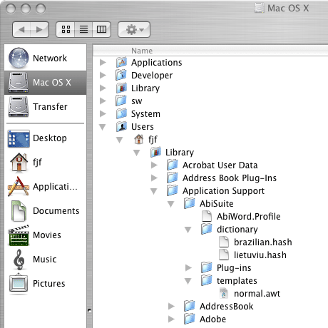
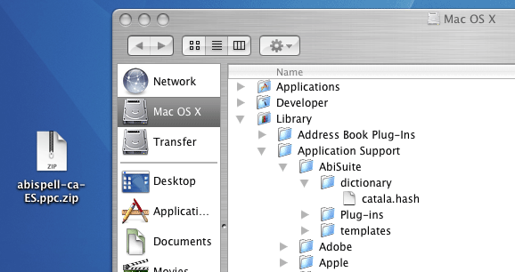
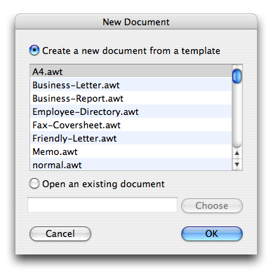

AbiWord 2.4
Cocoa version for MacOSX.
| Introduction |
| License |
| Guide |
| Templates |
| Language |
| Dictionaries |
Templates
AbiWord comes bundled with a number of templates (these are hidden away within the application bundle). You can create your own, however, and put them in your templates folder. The default template is "normal.awt", so you can customize the page size, language and layout of new documents by creating your own "normal.awt" and saving it here:
/Users/[you]/Library/Application Support/AbiSuite/templates
If this folder does not exist, create it.

If you are an administrator, you can also create templates that all users can use by saving them here:
/Library/Application Support/AbiSuite/templates
If this folder does not exist, create it, or start AbiWord while logged in as an administrator.

Creating a new template
A number of country-/language-specific default templates come with AbiWord. Create a new document by choosing "New using Template..." from the "File" menu. You should see this window:

If you scroll down through the list, you will see a lot of templates called "normal.awt", "normal.awt-en_CA", "normal.awt-en_GB", "normal.awt-ca_ES", and so on. The "-en", "-ca", etc., indicate language, and the "_CA", "_GB", etc., indicate country. Choose one which suits your preferred default language for spell checking. Some of these have different default page sizes also - for example, "normal.awt-en_GB" is set to page size A4.
To adjust page size to something else, use "Page Setup..." in the "File" menu.
Make any other adjustments you want to make, then save as "normal.awt" - using file type "AbiWord Template (.awt)" - in your templates folder.
This page is Copyright ©2004-2005 the AbiSource community. All rights reserved.
AbiSource, AbiSuite, and AbiWord are trademarks of Dom Lachowicz. All other product names, company names, or logos cited herein are property of their respective owners.
AbiWord is free software, subject to the GNU General Public License.